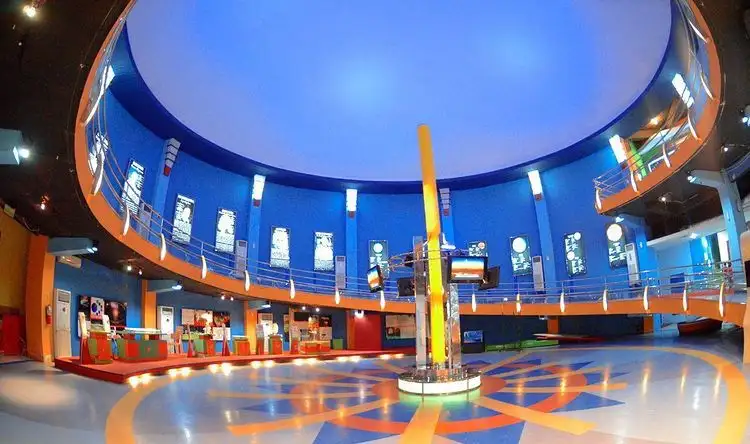
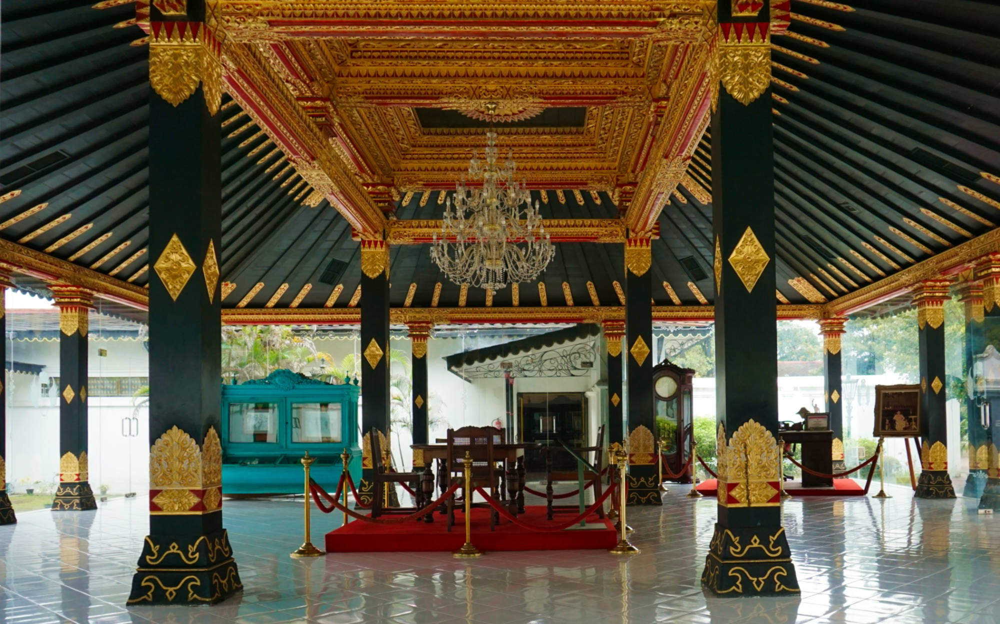

Beranda
Kontak
Tentang
Tour Guide


Admin
Tempat
Tambah Tempat
Pemandu Wisata
Tambah Pemandu
Edit Pemandu
Mengedit Tempat
Malioboro

Jalan ikonik di Yogyakarta, pusat perbelanjaan dan hiburan malam dengan suasana khas, pedagang kaki lima, dan lampu neon yang menarik.
Taman Pintar
Gabungan alam dan inovasi dalam taman teratur dengan instalasi seni modern, menciptakan pengalaman visual yang cerdas dan inspiratif.
Candi Prambanan

Keindahan Hindu abad ke-9 di Yogyakarta. Siluet megah dan relief ukiran menciptakan potret budaya Indonesia yang memukau.
Taman Sari

Istana air yang memesona dengan arsitektur istimewa dan keindahan taman yang menakjubkan. Suasana magis dan penuh sejarah.
Keraton Jogja
Keelokan arsitektur Jawa, kehijauan taman, dan pesona sejarah yang terpancar. Suasana hangat dan detail artistik yang memikat perhatian.
Goa Pindul

Petualangan seru menyusuri gua bawah tanah dengan ban pelampung. Keindahan stalaktit dan stalagmit memikat mata pengunjung.


2023 WebCrafters